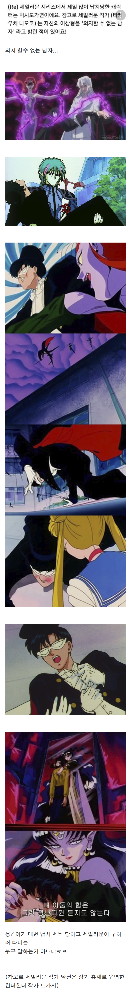
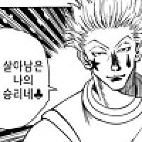

세일러문 작가의 이상형은 ‘의지 할 수 없는 남자’
댓글
턱시발 가면 ㅋㅋㅋ
나도 쟤보고 생긴건 멀쩡한데 병신이라고 했다가 사촌여동생들이 나한테 말 안걸었음

토가시도 아파서 의지할수없긴해.
토가시는
허리가 그냥 없음
의지 못함
언행일치 완전
보석상 집안의 유복한 딸이자 천문학과 만화가 취미, 아버지의 권유로 약사( 현 게이오 대학 졸업
.병원 취직) 라는 안정적인 직업취득.
그러니 잘 생기고. 돌봐줄 남자가 취향일수도..
잘..생겨?
내가 돌봐주면 안되는 (잘생긴) 남자 이거 한국 드라마에서도 종종 나오는 소재라서 이상하진 않네 ㅋㅋ
이거 마다오 아니냐
다메오?
아.. 토가시 말하는거였구나.

쟤 이름이 마모루였던거 같은데, 지켜주는게 아니라 지킴받는 이었냐는
마누라나 남편이나 천생연분이네 ㅋㅋㅋ
아예 시즌 1편부터 비행기안에서 납치당하고 시즌 거의 마지막까지 빌런짓한 것도 있었던거 같은데 ㅋㅋㅋ
맨날 장미만 던지고 사라지는 거 보면 의지 안 되는 건 확실하긴 했지 ㅋㅋ
근데 일반인 몸으로 저기까지 비빈거아닌가?
세일러문 남편 토가시였어?
ㅇㅇ;
결혼을 하고 아내와 함께 하는 시간이 많아 질수록 점점 제 허리에 힘이 없어지는 느낌입니다 아 그렇다고 아프다는건 아닙니다 마치 제 척추 하나하나가 점점 없어지는 그런 느낌… 그러던 새벽 어느날, 자고 있던 저는 누가 제 등을 긁은 느낌이 나 순간 뒤를 돌아보니 아내가 저의 등을 긁고 있는 거 아니겠습니까 마치 호미로 땅을 긁어내듯 말입니다..
ㅈㄴ 이토준지 같네
생각해보니 등장만 기억나고 얘가 뭘 했는지는 기억이 안나 ㅋㅋㅋㅋㅋㅋ
어릴때 저새끼 맨날 잡혀가는데 누나가 좋아해서 저런병신 왜좋냐고 턱시발가면 이라고 했었는데